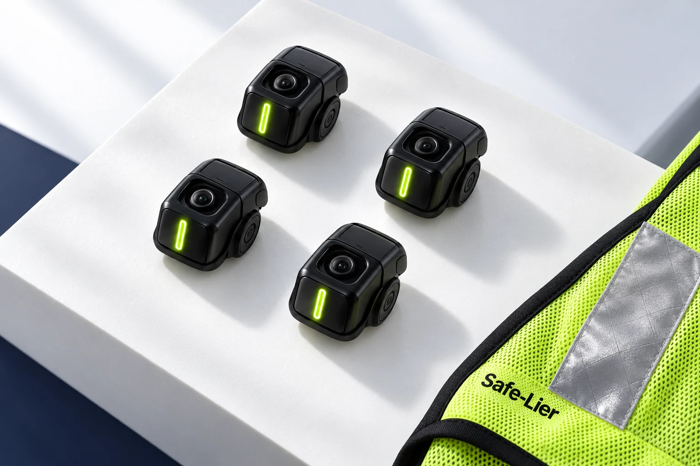
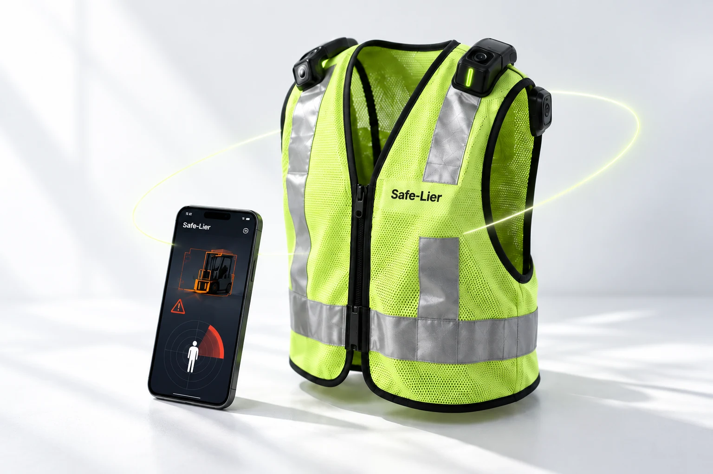
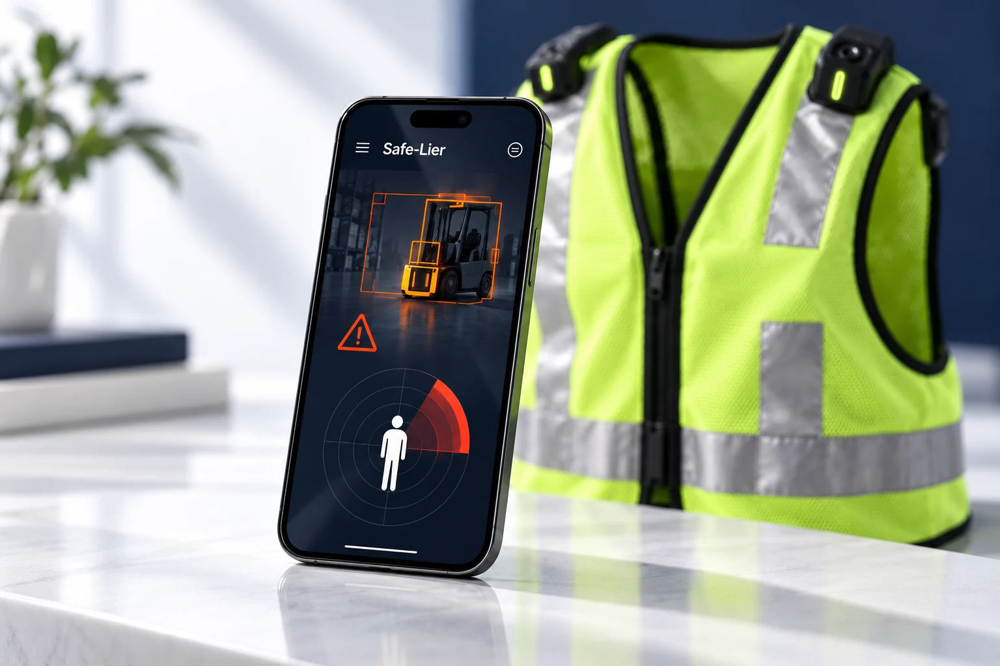
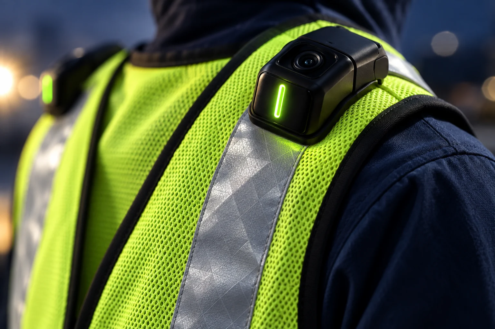
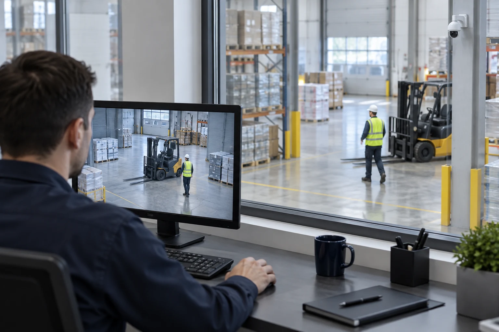

01 / SENSE
조끼에 담은 네 방향의 감지
전·후·좌·우에 장착하는 4개의 센서 단말. 작업자 주변의 접근 위험을 감지하도록 설계합니다.

AI 생성 개발 개념 이미지 · 최종 제품과 다를 수 있습니다
MEET SAFE-LIER
조끼의 4방향 센서와 스마트폰 AI.
감지부터 경고까지, 작업자 곁에서 연결됩니다.

01 / SENSE
전·후·좌·우에 장착하는 4개의 센서 단말. 작업자 주변의 접근 위험을 감지하도록 설계합니다.

02 / UNDERSTAND
센서가 전달한 영상과 거리 정보를 바탕으로, 스마트폰의 온디바이스 AI가 충돌 위험을 판단합니다.

03 / ALERT
위험을 판단하면 조끼의 LED와 경고음으로 알립니다. 작업자가 위험을 인지하고 대피하도록 돕습니다.
SAFETY, WHERE YOU ARE
세이플라이어는 작업자를 따라 움직이는 안전을 생각합니다. 조끼의 4방향 센서와 스마트폰 AI를 연결해, 위험을 감지하고 작업자에게 직접 알리는 웨어러블 안전장치를 개발합니다.
솔루션·기술 알아보기WHY SAFE-LIER?
소음과 작업 몰입으로 놓치기 쉬운 장비의 접근.
세이플라이어는 경고가 작업자에게
직접 닿는 방법을 생각합니다.

01 / 기존 · 관제실 중심
CCTV와 서버 AI, 관제실과 관리자를 거치는 경고.
현장의 소음과 여러 전달 단계가 대응의 장벽이 될 수 있습니다.
02 / SAFE-LIER · 작업자 중심
4방향 센서와 스마트폰 AI를 연결해 위험을 판단하고,
조끼의 LED·경고음으로 작업자에게 경고하도록 개발합니다.
현재 시제품 개발 중입니다. 감지 성능과 경고 지연시간·인지율은 통제 시험 및 현장 실증으로 검증할 예정입니다.
작동 흐름 살펴보기DISCOVER SAFE-LIER
제품의 원리부터 함께할 기회까지.
세이플라이어를 더 가까이 만나보세요.
LET’S MAKE WORK SAFER
투자와 제휴, PoC·현장 실증을 함께할 파트너를 기다립니다.